Strangers in Paradise
Srinagar, Kashmir, India
We arrived at Butts Clermont Houseboats to warm hugs from Mr Gulam Butt, the gentlemanly proprietor who became more like family than our host by the end of our 7 night stay, and a pot of piping hot Kashmiri tea delivered by the smiling Ramzan. At long last we were in Srinagar, the capital of Kashmir where the British used to escape to during the long hot Indian summers for respite and secret romantic liaisons on the lake! This was the third holiday we had planned to Srinagar, but on the other two occasions the security situation had kept us away. This summer the beautiful Kashmir Valley has stayed peaceful, so far, and we hope for the sake of the warm, but worn-down Kashmiris we met, that it will now stay that way.
Butts Houseboats are on the shores of Dal Lake alongside The Mughal built ‘Garden of the Morning Breeze’, under a row of 400 year old giant chinnar trees. Our houseboat was grand, to say the least, with richly carved and paneled cedar wood interiors, Kashmiris handwoven carpets, crewel-work curtains and the piece-de-resistance, an enormous chandelier set in the middle of the living room. We were to be joining its list of eminent former guests, from Ravi Shankar and Dilip Kumar to Louis Mountbatten, Michael Palin and most importantly George Harrison. Mr Butt told us about the night in 1966 when Mr George and Shri Ravi Shankar held a private candlelit concert for his father and friends under the pergola in the Garden of the Morning Breeze. Mr Butt I think was transported for some moments to that night and when I asked him whether George Harrison bought his wife along, he said, “Ah yes – she was called Patricia,” otherwise known to us as Patti Boyd who Eric Clapton wrote Layla about!
Srinagar is famous for its shikaras, boats much like large gondolas that transport people around the Lake. We took three trips out on the Lake with Lasaa, a very gentle character who spoke the clearest English we have ever heard in India, learnt over 50 years from chatting with tourists! We felt like royalty as Lasaa and his foster-son paddled us across the lake in the shikara aptly named ‘Stranger in Paradise’. We went out to the floating gardens which the Lake’s Mihrbahri people have cultivated for centuries. The gardens, Lasaa explained with his twinge of a London accent, can be towed from one spot to another, employing a natural sub-irrigation system to grow a multitude of vegetables.
Another morning we arose while it was still dark to visit the city’s floating market. Dawn found us sipping saffron-laced Kahwa and eating bread fresh from a Lake-side bakery as Lasaa paddled us along the lanes of Dal Lake towards the market which was in full swing by 5am! We watched as the traders discussed prices, leaning from one boat to another to check the quality of the neighboring boat’s produce. Trading seemed to be a much more congenial business here than in Bombay, with smiles and hand-shakes accompanying the deals. On our way back a flower-laden boat paddled up to us – “I’m Mr Wonderful” said the owner as he tried a hard sell on a vase full of sweet william.
We spent most of our time in Srinagar discovering the Old City as well as the lanes around Hazratbal mosque. Many of the old wooden houses still exist, which seem to mix Tudor and Islamic architecture, but which have a distinctly Kashmiri-ness to them. Some of the houses while somewhat neglected, with window-shutters hanging off here and there and peeling varnish, were stunningly beautiful and not like anything we had imagined or seen anywhere else. This made for a very medieval feel and you could easily imagine at times that you had walked back in history, to a time when Kashmir was an independent princely state free from the violence of international politics.
The city’s streets are strewn with elegant mosques and shrines, the oldest being Khanqah-i-Muala, raised in honour of Shah Hamdan, leader of a group of missionaries who bought Sufism to the Valley. The current structure dates back to the 1730s and is a most exquisite sight, with a pagoda-like roof (as is the style of all of the old mosques in Srinagar) and a green entranceway adorned with detailed papier-mâché work. It truly took one’s breath away and, as we said later, could well rank as one of the most amazing man-made structures we have seen in India.
Oft called ‘Paradise on Earth’, Kashmir really stole our hearts as did the Kashmiris we met. Kashmiris like Mr Butt with a charm that is so rarely found in modern times; Ramzan with his smiles, laughs and hopes for the Valley; Lasaa with a head full of knowledge about the natural world and deeply sad eyes; and Maadha and Ghaffar, who have been whipping up the juicest kebabs and fattest meatballs for houseboat guests for close to 50 years. There was also the atta (flour) trader in Hazratbal market who invited us into his shop for some respite from the summer heat and a handful of almonds; the Islamic scholar who encouraged us to take photos inside one of the city’s shrines so we could show ‘people at home what Muslims are like’; the young psychology student who recited Urdu couplets to describe to us how he saw the world; and so many more.
What more can we say? You need to go to Srinagar to see this amazing, but scarred city for yourself. Srinagar is hurting from so many things, one of which is unemployment caused by lack of tourists. So, go, stay at Butts Houseboats for a while and experience this little slice of Kashmir.
Butts Houseboats are on the shores of Dal Lake alongside The Mughal built ‘Garden of the Morning Breeze’, under a row of 400 year old giant chinnar trees. Our houseboat was grand, to say the least, with richly carved and paneled cedar wood interiors, Kashmiris handwoven carpets, crewel-work curtains and the piece-de-resistance, an enormous chandelier set in the middle of the living room. We were to be joining its list of eminent former guests, from Ravi Shankar and Dilip Kumar to Louis Mountbatten, Michael Palin and most importantly George Harrison. Mr Butt told us about the night in 1966 when Mr George and Shri Ravi Shankar held a private candlelit concert for his father and friends under the pergola in the Garden of the Morning Breeze. Mr Butt I think was transported for some moments to that night and when I asked him whether George Harrison bought his wife along, he said, “Ah yes – she was called Patricia,” otherwise known to us as Patti Boyd who Eric Clapton wrote Layla about!
Srinagar is famous for its shikaras, boats much like large gondolas that transport people around the Lake. We took three trips out on the Lake with Lasaa, a very gentle character who spoke the clearest English we have ever heard in India, learnt over 50 years from chatting with tourists! We felt like royalty as Lasaa and his foster-son paddled us across the lake in the shikara aptly named ‘Stranger in Paradise’. We went out to the floating gardens which the Lake’s Mihrbahri people have cultivated for centuries. The gardens, Lasaa explained with his twinge of a London accent, can be towed from one spot to another, employing a natural sub-irrigation system to grow a multitude of vegetables.
Another morning we arose while it was still dark to visit the city’s floating market. Dawn found us sipping saffron-laced Kahwa and eating bread fresh from a Lake-side bakery as Lasaa paddled us along the lanes of Dal Lake towards the market which was in full swing by 5am! We watched as the traders discussed prices, leaning from one boat to another to check the quality of the neighboring boat’s produce. Trading seemed to be a much more congenial business here than in Bombay, with smiles and hand-shakes accompanying the deals. On our way back a flower-laden boat paddled up to us – “I’m Mr Wonderful” said the owner as he tried a hard sell on a vase full of sweet william.
We spent most of our time in Srinagar discovering the Old City as well as the lanes around Hazratbal mosque. Many of the old wooden houses still exist, which seem to mix Tudor and Islamic architecture, but which have a distinctly Kashmiri-ness to them. Some of the houses while somewhat neglected, with window-shutters hanging off here and there and peeling varnish, were stunningly beautiful and not like anything we had imagined or seen anywhere else. This made for a very medieval feel and you could easily imagine at times that you had walked back in history, to a time when Kashmir was an independent princely state free from the violence of international politics.
The city’s streets are strewn with elegant mosques and shrines, the oldest being Khanqah-i-Muala, raised in honour of Shah Hamdan, leader of a group of missionaries who bought Sufism to the Valley. The current structure dates back to the 1730s and is a most exquisite sight, with a pagoda-like roof (as is the style of all of the old mosques in Srinagar) and a green entranceway adorned with detailed papier-mâché work. It truly took one’s breath away and, as we said later, could well rank as one of the most amazing man-made structures we have seen in India.
Oft called ‘Paradise on Earth’, Kashmir really stole our hearts as did the Kashmiris we met. Kashmiris like Mr Butt with a charm that is so rarely found in modern times; Ramzan with his smiles, laughs and hopes for the Valley; Lasaa with a head full of knowledge about the natural world and deeply sad eyes; and Maadha and Ghaffar, who have been whipping up the juicest kebabs and fattest meatballs for houseboat guests for close to 50 years. There was also the atta (flour) trader in Hazratbal market who invited us into his shop for some respite from the summer heat and a handful of almonds; the Islamic scholar who encouraged us to take photos inside one of the city’s shrines so we could show ‘people at home what Muslims are like’; the young psychology student who recited Urdu couplets to describe to us how he saw the world; and so many more.
What more can we say? You need to go to Srinagar to see this amazing, but scarred city for yourself. Srinagar is hurting from so many things, one of which is unemployment caused by lack of tourists. So, go, stay at Butts Houseboats for a while and experience this little slice of Kashmir.

Lasaa who spoke like a Londoner!

Team Butts
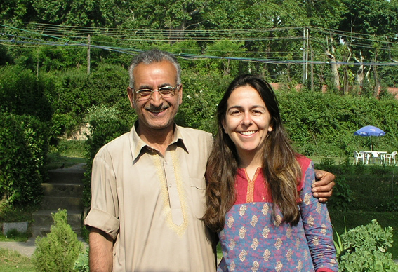
Sue and Ramzaan-Kaka
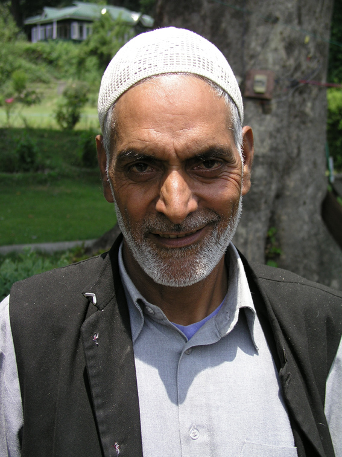
Maadha - headcook - Butts Houseboats
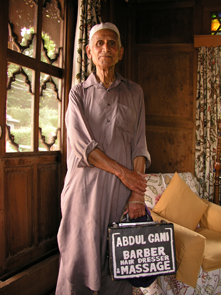
Mr Abdul Gani - mallishwallah and barber!

Dal Lake
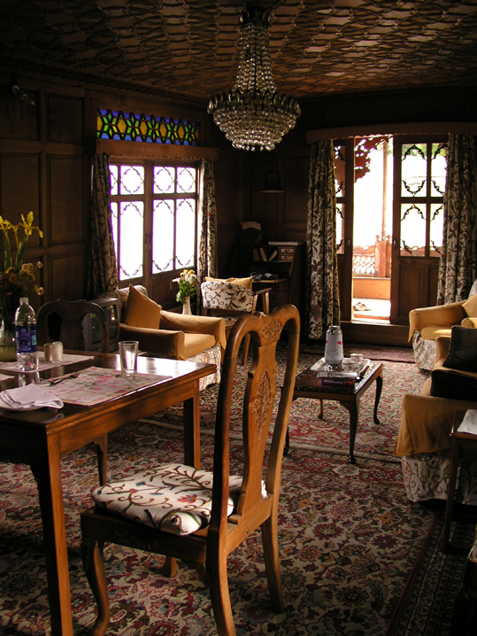
Butts Houseboat - living room
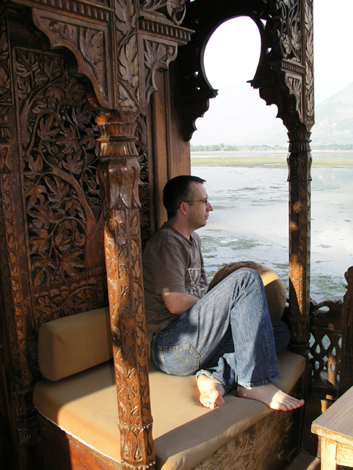
Nathan relsxing on our houseboat
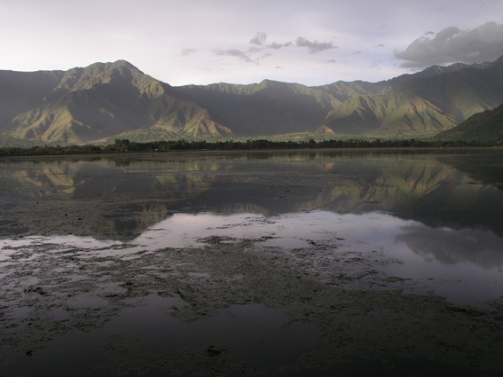
After the rain

Our view of Hazratbal Mosque

Jamia Masjid, Srinagar

Khanqah-i-Muala

One of the attendants at Khanqah-i-Muala

Khanqah-i-Muala
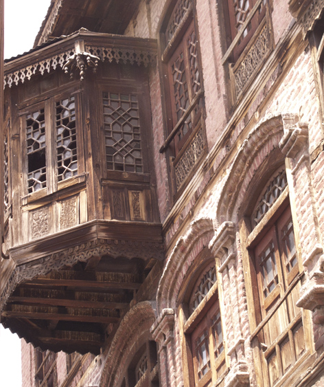
The Old City

The Old City
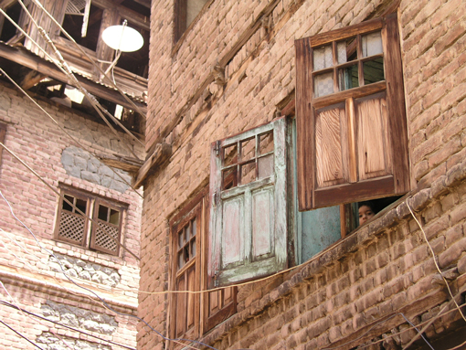
The Old City
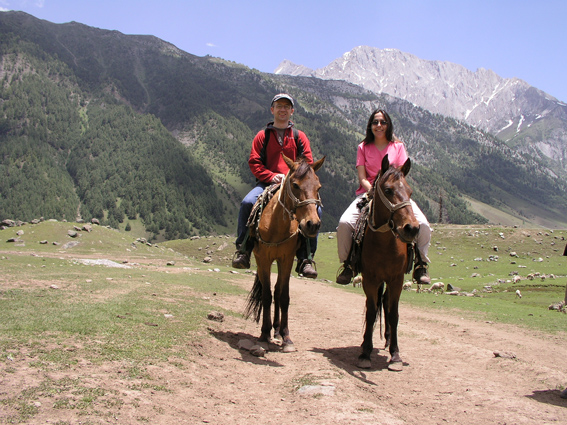
Just like a scene from Sholay (only this version filmed in Gulmarg)
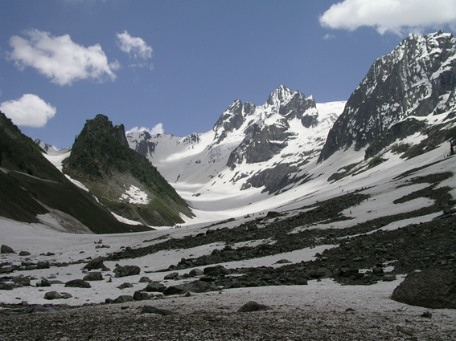
Gulmarg
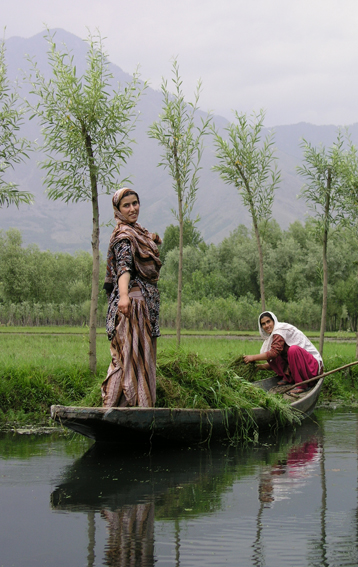
Working on the canals of Dal Lake
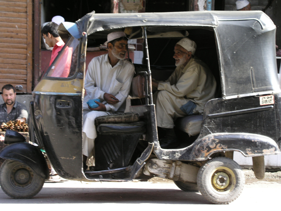
The Friday market, Hazratball
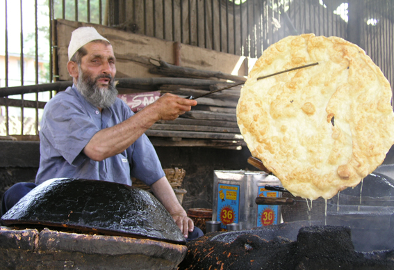
A giant paratha dripping with fat
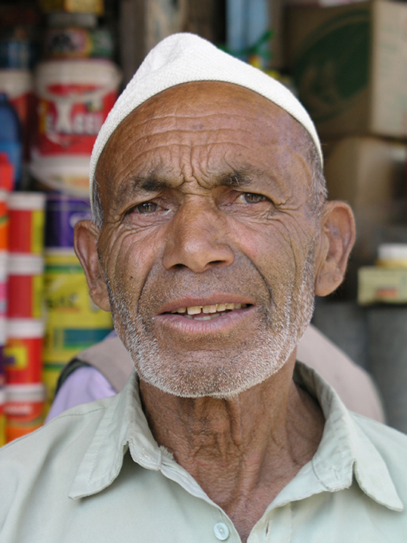
One photo...

Mohammad Safi - atta merchant

Maharaj Cope in the shikara drinking saffron-laced tea from a china cup

Butts Houseboats
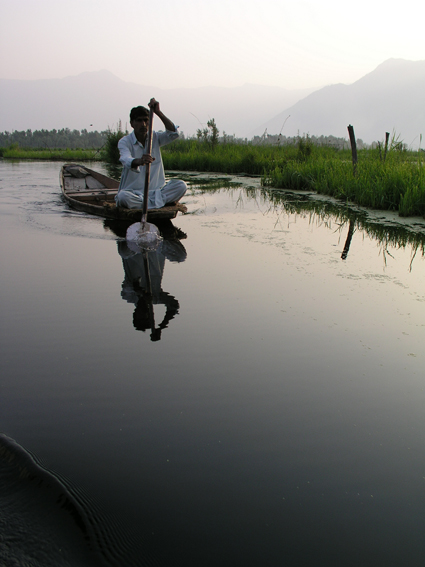
Early morning on Dal Lake
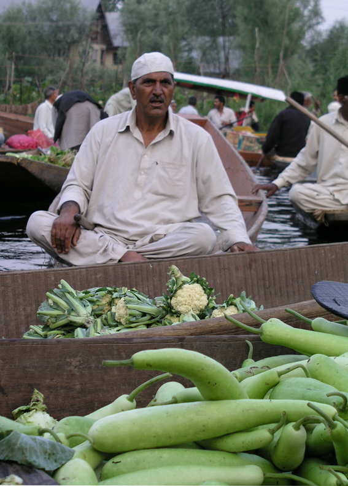
Floating market

The floating market


Fishing village, Hazratbal

Hazratbal waterfront

Hazratbal waterfront
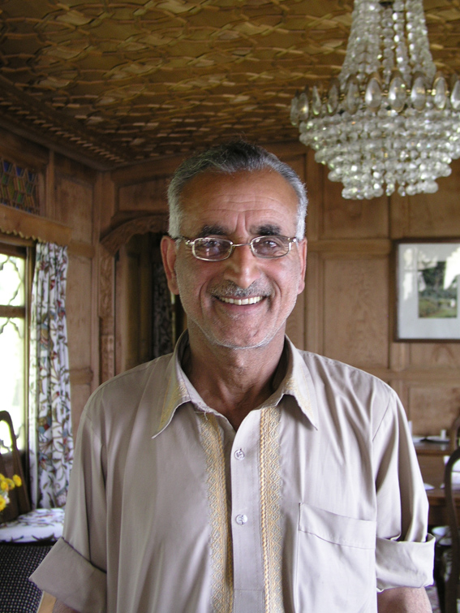
Ramzaan-Kaka who has been with Mr Butt for 47 years
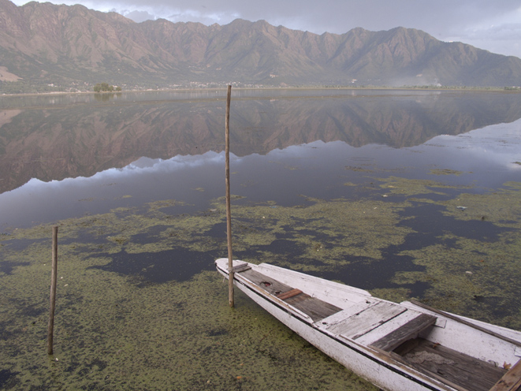
After the rain on Dal Lake